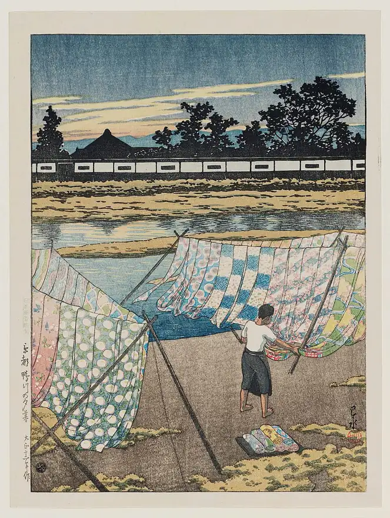
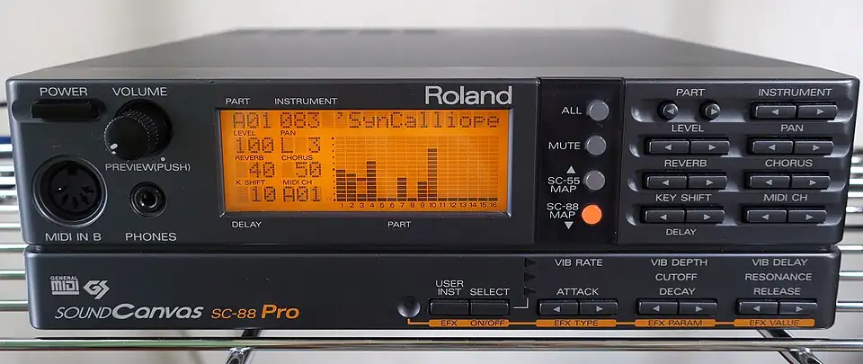
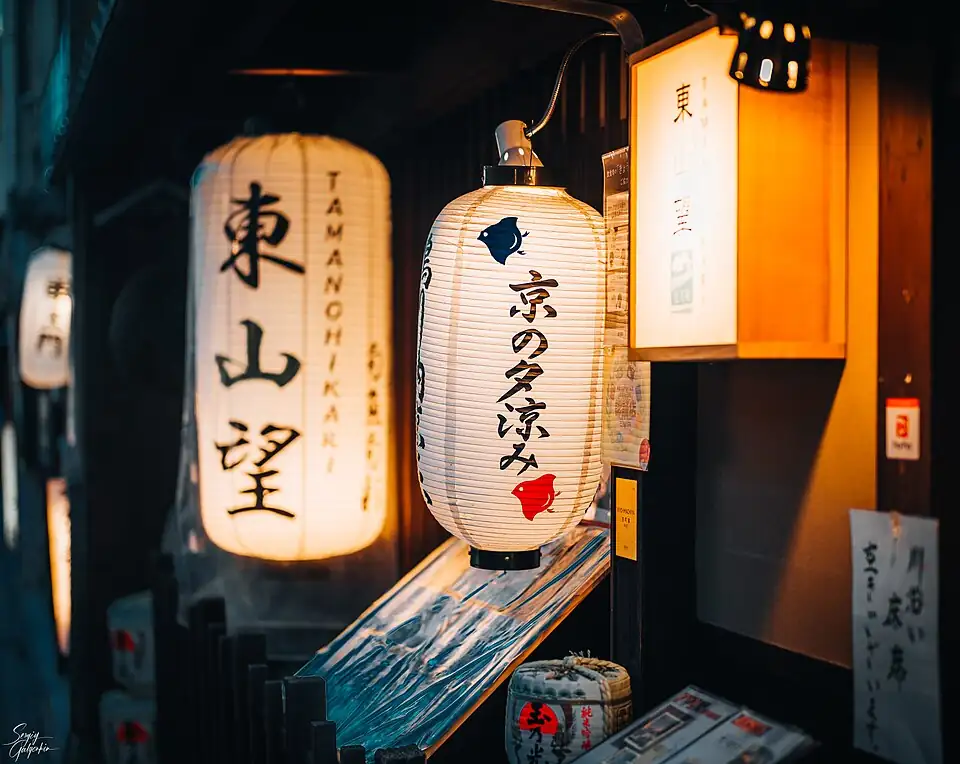
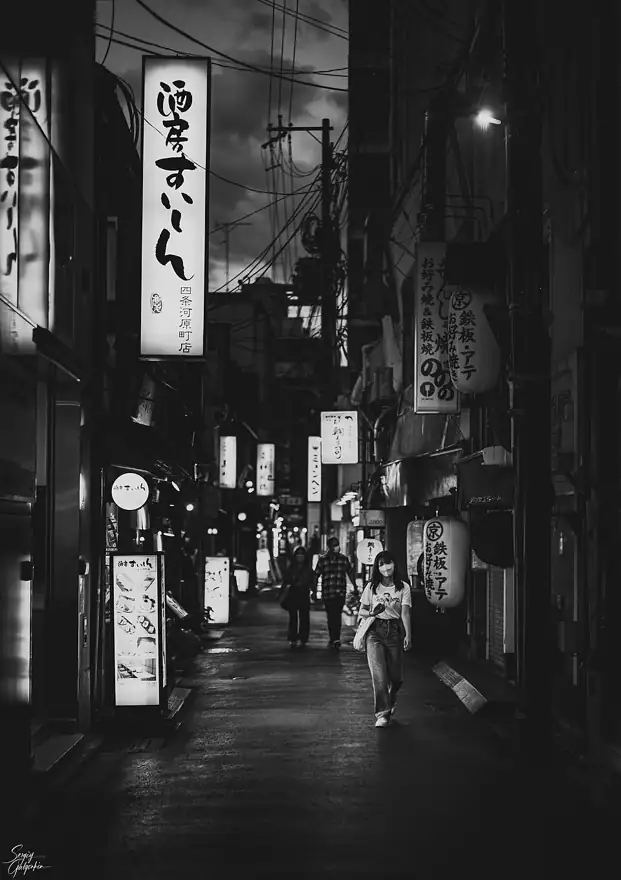
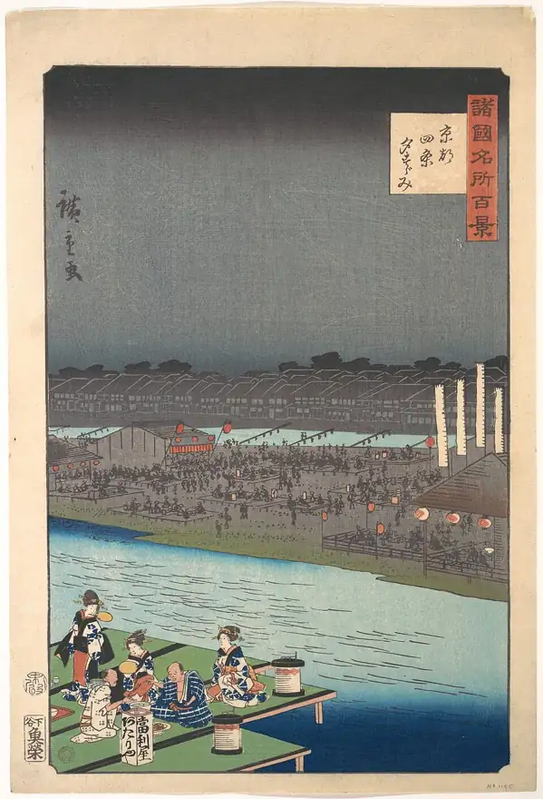
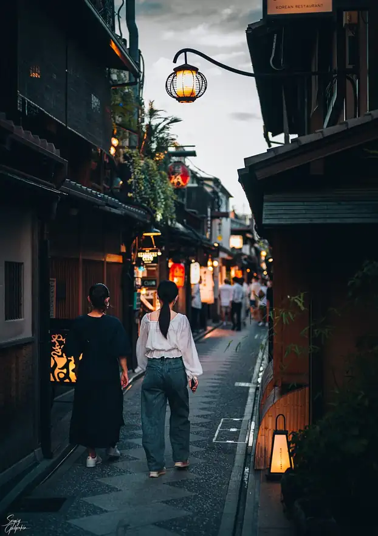

Feature — rei harakami · 9 chapters
君はレイ・ハラカミを知っているか
Aメロも、Bメロも、サビもない。それなのに、いちど聴いたら耳から離れない。
京都でひとり、小さな機材で鳴らされていた音。ここから9章。
IN THIS ISSUE
 CHAPTER 01
CHAPTER 01 CHAPTER 02
CHAPTER 02 CHAPTER 03
CHAPTER 03 CHAPTER 04
CHAPTER 04 CHAPTER 05
CHAPTER 05 CHAPTER 06
CHAPTER 06 CHAPTER 07
CHAPTER 07 CHAPTER 08
CHAPTER 08 CHAPTER 09
CHAPTER 0920年くらい前、はじめて聴いたとき、
「こんな音楽、聴いたことない」と思った。
大げさじゃなく、「今まで聴いてた音楽は何だったんだ」とまで思った。歌もない。サビもない。なのに、ずっと聴いていられる。むしろ、止めたくない。
レイ・ハラカミ。1970年、広島生まれ。18歳のとき学生として京都へ移って一人暮らしを始め、そのまま京都で音を作り続けた人All About日本科学未来館。本人いわく、京都には今でも「よそもの」という感覚があるAll About。
カセットテープ1本から始まったデビューから、矢野顕子とのユニットまで。その音がどう広がっていったかを、順番にたどってみる。
最後に、ふたりの名前をひとつにしたユニットのライブが待っている。
カセットテープ1本に、返事は一週間で来た
rei harakami - unrest
アルバム『unrest』 ／ 1998
1998年のデビュー・アルバム『unrest』Red Bull Music AcademyTOWER RECORDS。その最後に入っている表題曲。後の作品に比べるとテクノ色が強いが、あの深いディレイと、左右に振れる音と、ぬるっと滑る音程は、もうここにあるRed Bull Music Academy。
始まりは、カセットテープ1本だった。1996年、ファースト・アルバムの3分の1が入ったデモをSublime Recordsに送ると、一週間もしないうちに「リリースしたい」と返事が来た。数か月後、まだ電話でしか話したことのない相手から「リミックスやってみる？ もちろん良くなかったら没なんだけど」。ダメ元で作ったFlare（Ken Ishiiの別名義）のリミックスが、世に出た最初の仕事になったAll About。
音楽の入り口は、親に通わされたヤマハ音楽教室。楽譜どおりに弾くことに興味が持てなかった（本人いわく「要するにヘタクソだった」）少年の遊びは、マイク付きのカセットレコーダーに音を吹き込むことだったAll About。
アルバムを出しても、反響は「全然ないですよ。けなされもしなかったけど」。これが最後になるかもしれない、と思っていたというTOWER RECORDS。水彩画みたいだ、と僕は思った。にじんで、混ざって、輪郭がはっきりしない。なのに、どこを切っても彼の色をしている。
その色の正体は、何だったのか。同じアルバムから、もう1曲。

Photo: 川瀬巴水 (Kawase Hasui) / Public domain / Wikimedia Commons「お父さんが趣味で始める機材」で、ここまで来てしまった
rei harakami - more elbow
アルバム『unrest』 ／ 1998
使っていた音源は、ローランドのDTM用モジュールSC-88Pro。1996年に出た旧式の機械を2台並べ、内蔵のステレオディレイで音を左右に振るWikipedia。本人いわく、それを長年「買い換えてないので、ああなっちゃう」TOWER RECORDS。
なぜその機材だったのか。「そもそもお金が無かったからです」。スタジオと言えば聞こえはいいが、自分の部屋に機材が置いてあるだけだったAll About。93〜94年ごろに使い始め、2、3年たって音色の正体が分かってくると、足し算で曲が組めるようになったTOWER RECORDS。
「〈お父さんが趣味で始めるDTM〉みたいな、そういう機材で始めちゃったから（笑）。それで飽き足らなくなったら替えればいいやと思ってたら、ここまできちゃった」。もしあのとき買ったのがサンプラーのMPCだったら、まったく別の音楽をやっていたかもしれない、ともTOWER RECORDS。
新しい機材が新しい表現を生むとは限らない。使い続けている音源でも、組み合わせ次第で十分いろんなことができる——そう考えていたAll About。僕の部屋にも、5年前のノートパソコンがある。ひび割れた画面で、この原稿を書いている。
3年後、その音は、本人も形容できないものになる。

Photo: Darklanlan / CC BY 4.0 / Wikimedia Commons「これを出したら、引退しようかな」と思いながら作った3枚目
rei harakami - cape
アルバム『red curb』 ／ 2001
僕の音楽観を変えたのは、2001年の3枚目のアルバム『red curb』だったTOWER RECORDSele-king。ポップスで育った耳は、曲を「Aメロ・Bメロ・サビ」で数えてしまう。でもこのアルバムは、そのどれにも当てはまらない。言葉にしようとして、できなかった。いまだに形容できない。
本人のコメントが残っている。「3枚目の制作にあたって、もう好きな事ばっかりやろう、というか、好きな事しか出来ないなあ…なんて考えながら作ってました」。そして「ちなみに、このアルバム発表したら、引退しようかなと考えておりましたが、そうはいきませんでした」rings。
作っている最中は「お金なくてどうしよう」。周りの状況もカテゴリーも、踊らせなきゃという義務も、考えるのが面倒になって、「売れなくていいや」とTOWER RECORDS。そうやって削ぎ落としたら、世界的な評価を決定づける1枚になったTOWER RECORDS。
ele-kingの野田努は、追悼のレビューにこう書いた。「『レッド・カーブ』は彼が愛したロバート・ワイアットのように美しい作品だが、思い詰めた悲しみというものはない」。レイ・ハラカミの音楽には、バッド・ヴァイブというものがないele-king。
「今まで聴いてた音楽は、何だったんだ」
この音を、ほかの人たちも放っておかなかった。最初の大仕事は、UA。

Photo: Sergiy Galyonkin / CC BY-SA 2.0 / Wikimedia Commons引きこもりの初仕事が、いきなり本物のスタジオだった
UA - 閃光
シングル／映画『水の女』主題歌 ／ 2002.7.24
2002年7月24日に出たUAの14枚目のシングル。UAが初めて作曲とプロデュースを手がけた曲で、プロデューサーにはUAとレイ・ハラカミの名前が並び、シングル版の編曲はハラカミWikipedia。本人が出演した映画『水の女』の主題歌でもあるWikipedia。BARKSは「名作『閃光』の共同プロデュース」と書いたBARKS。
「歌以外は完全にハラカミさんの世界ですね」と聞かれて、本人は否定している。「いや、そんなことはなくて、だいぶ彼女の意見が入ってますよ。彼女にとっては久々のソロで、しかも初めての作詞作曲で、『ワーッ!』となってるわけですよ。僕は僕で、ちゃんとしたスタジオで誰かと一緒にやるっていうことに関して、右も左もわかってないですから。それまではただの引きこもりですからね（笑）」TOWER RECORDS。
現場には、朝本浩文、ASA-CHANG、鈴木正人という顔ぶれが、侃々諤々やっていた。「俺なんかいなくてもできるじゃん」ぐらいの感じだったという。「一番最初に一番強烈な状況でやったわけですから」TOWER RECORDS。
人の曲を、自分の音に塗り替える。くるりの曲でも、それをやった。

Photo: Sergiy Galyonkin / CC BY-SA 2.0 / Wikimedia Commons会った瞬間、メガネが曇った
くるり - ばらの花 ～remixed by Rei Harakami
アルバム『ワールズエンド・スーパーノヴァ』
くるりの『ワールズエンド・スーパーノヴァ』に入っているリミックス。2003年、これを聴いた矢野顕子が、ハラカミの才能をキャッチした。ハラカミのほうは、デビュー・アルバムのころから矢野顕子の音楽を深く敬愛していたヤマハミュージックコミュニケーションズ。
くるりとの縁は、くるりのほうから来た。『red curb』を作っている間、ハラカミはくるりの『図鑑』を愛聴していた。発売後、「コンサートに遊びに来て下さい」と連絡が来て、本当にびっくりしたという。「お会いした時、やはりかけていたメガネが曇りました」All About。日本語のロックにはずっと興味がなかった人が、「日本語で歌詞がいい」と思えた久々の相手が、くるりだったTOWER RECORDS。
このリミックスは、かなり悩みながら作った。だから矢野顕子に絶賛されたとき、「もう引退してもいいかなと思える瞬間もありました。してませんが」All About。
ふたりの交流は、2003年の矢野顕子の恒例コンサート「さとがえるコンサート」のトラック制作を頼まれたところから始まるヤマハミュージックコミュニケーションズ。原曲を知っている人ほど、最初の数秒で「あ、ハラカミだ」と分かるはず。
聴きくらべ — 元の「ばらの花」
そして2005年。4年ぶりのアルバムに、矢野顕子がとんでもない肩書きをつける。

Photo: 二代歌川広重 (Utagawa Hiroshige II) / CC0 / Wikimedia Commons世界遺産に決定。文句無し。
rei harakami - come here go there
アルバム『lust』 ／ 2005.5.25
2005年5月25日、『red curb』から4年ぶりのアルバム『lust』BARKS。以前共演していた矢野顕子は、このアルバムに「世界遺産に決定。文句無し。」と言葉を寄せたAll AboutBARKS。もちろんユネスコとは関係ない、矢野顕子の独断の認定だWikipedia。僕はずっと yanokami の頃の話だと記憶していたけど、ユニットとしてデビューするより前の言葉だった。
4年かかった理由は、はっきりしている。『red curb』のあと、名前を出す仕事の依頼しか来なくなり、責任上、自分の作業が遅くなった。実際に作ったのは、ほぼ前の年の1年間All About。
このアルバムで変わったことを、本人はこう言っている。『red curb』の頃はまだ周りの状況に対する「悪意みたいなもの」があって、『lust』ではそれがなくなっている。「いつも思うのは、すごく地味な、すぐ寝れる音楽を作りたいなと（笑）」。出来には納得していて、「いつ遺作になっても問題ない」とまでTOWER RECORDS。
ジャケットの古い瓦屋根の住宅地は、スズキスキー（元Fantastic Explosion。写真家ではなく音楽家）が個人的に撮った写真。本人は場所を知らない。「京都にこういうロケーションはありそうで、実はあり得ない」All About。
その『lust』には、もうひとつ、誰も予想していなかったものが入っていた。本人の歌声だ。

Photo: Sergiy Galyonkin / CC BY-SA 2.0 / Wikimedia Commonsウォークマン用のマイクで歌った下書きが、そのまま清書になった
rei harakami - owari no kisetsu
アルバム『lust』 ／ 2005
細野晴臣が1973年の『HOSONO HOUSE』に入れた「終りの季節」Wikipedia。それを『lust』でカバーし、歌っているのは本人。ソロ作で声を使ったのは、これが初めてだったRed Bull Music AcademyBARKS。
きっかけは、矢野顕子からの「終わりの季節」をハラカミのアレンジで歌いたい、というオファー。トラックを渡すとき、自分でウォークマン用のマイクで適当に歌ったものを聴かせた。それが発端で、アルバムに入れるかどうかは最後まで考えていなかった。「ちなみにCDに入ってる歌はデモのバージョンのままです」All About。もともと yanokami でカバーするためのデモが、そのままハラカミ版になったNiEW。
自分で作った歌詞と主旋律だったら、冷静に聴けなかっただろう、とも言っているAll About。原曲よりさらに抑揚を抑えた、ぶっきらぼうな歌い方に、宅録の人らしさが出ているNiEW。PVは、本人がカメラを持って撮ったBARKS。
細野晴臣のアルバムで一番好きなのは『マーキュリック・ダンス』（1985年）だった、と本人のブログにあるNiEW。2019年の秋には、サム・ゲンデルがヘッドホンで『lust』を聴いていたという話もNiEW。
自分の声の次は、人の声と、詩と、星を連れてくる。
星の数を数えて、音の数を決めた
rei harakami - yami wa hikari no haha
プラネタリウム作品『暗やみの色』 ／ 2005–2007 上映
日本科学未来館のドームシアターで、2005年12月から2007年3月まで上映されたプラネタリウム作品『暗やみの色』。その音楽日本科学未来館CINRA。谷川俊太郎が詩「闇は光の母」を書き下ろし、クラムボンの原田郁子がナレーションと朗読を担当した日本科学未来館CINRA。
きっかけは1台の投影機だった。元ソニーのエンジニアが個人で開発した「MEGASTAR-II」を、当時の館長・毛利衛が見て「宇宙で見た星空にもっとも近い」と感じたことから、未来館に常設されたCINRA。肉眼では見えない暗い星まで映し出すその機械に合わせて、ハラカミは、投影される星の数と、自分の曲で使う音の数のバランスにこだわり、およそ4か月でサントラを完成させたCINRA。
しかも、音楽が先だった。映像はまだ存在しない。上映時間で決まった尺に合わせて、まだ見ぬプラネタリウムの映像を想像しながら作られた音楽だった。このあと手がけた映画『天然コケッコー』（2007年）のサントラのように、映像に合わせて作ったのではないCINRA。ちなみにその『天然コケッコー』の音楽で、第62回毎日映画コンクールの音楽賞を受けているWikipedia日本科学未来館。
本人は公式ガイドブックに、こう書いている。「『まだ見えていない何かに焦点を当てる』というコンセプトそのものでした。素敵じゃあないですか！」。歳を取るほど「見えないモノ、理解出来ないモノ＝存在しないモノ」という価値観でしか生きていけない、と思わされるフシがある。「この世界を見限ってしまうのか、希望を持つかは、結局その人次第なのですから」日本科学未来館。
ひとりで鳴らしてきた音は、最後に、ふたりの音になる。
京都とニューヨーク、MP3の往復で作ったユニット
yanokami with U-zhaan - 終りの季節
ライブ「yanokami indoor festival」
矢野顕子とレイ・ハラカミのユニット、yanokami。2007年8月、ハラカミのプロデュースでアルバム『yanokami』を出し、その年の「Yahoo!ミュージックアワード2007」ベストコラボレーション部門の最優秀賞を獲ったヤマハミュージックコミュニケーションズWikipedia。
作り方が、この人らしい。矢野顕子の歌とピアノをMP3にしてメールで送ってもらい、ハラカミがバックトラックを作って、またMP3で送り返す。最後のミックスダウンだけ東京のスタジオ。「やはり人間の移動が一番お金がかかりますね」All About。小学生のころ、テレビの中でYMOと一緒に飛び跳ねていた人と、初めて会ったときは「かけていたメガネが曇りました」All About。
07章でハラカミがひとりで歌った「終りの季節」が、ここではふたりの曲になって、U-zhaanのタブラと一緒にライブで鳴っている。
2011年、京都とニューヨークでやりとりしながら2枚目を作っている最中に、東日本大震災が起きた。気持ちが疲弊していく様子を感じた矢野顕子は、京都まで会いに行った。JR京都駅ビル2階の喫茶店で、パフェを食べながら。「2〜3時間は話し込んだんじゃないかな」京都新聞。
もう1本 — yanokami のスタジオ録音
2011年7月27日、脳出血のため、40歳で亡くなった日本科学未来館京都新聞。
直後のライブは、矢野顕子の出演と、ハラカミが遺した打ち込みのデータで、予定どおり行われた。その年の12月14日、2枚目のアルバム『遠くは近い』が出たWikipedia。
音は、まだ古びていない。
君はレイ・ハラカミを知っているか。
最後に、ひとつだけ。知らなかったなら、今日からでいい。
この特集をシェア
▼この記事を書くきっかけになった動画
「歌を覚える季節は終わらない」
SOURCES
- Red Bull Music Academy — A Guide to Rei Harakami
- TOWER RECORDS — rei harakami インタビュー（2009）(1)
- TOWER RECORDS — インタビュー (2)
- TOWER RECORDS — インタビュー (3)
- TOWER RECORDS — インタビュー (4) 閃光
- TOWER RECORDS — インタビュー (5) lust
- TOWER RECORDS — DISCOGRAPHIC（2009）
- rings — red curb 再発
- ele-king — red curb（野田努・2011）
- All About — レイ・ハラカミさんに伺う（2005）1/4
- All About — 2/4
- All About — 3/4
- All About — 4/4
- BARKS — 矢野顕子認定、レイハラカミの世界遺産的最新作（2005）
- ヤマハミュージックコミュニケーションズ — yanokami 全世界配信
- NiEW — 『HOSONO HOUSE』再訪
- 日本科学未来館 — 暗やみの色 リバイバル上映
- CINRA — 暗やみの色
- 京都新聞 THE KYOTO（2020）
- 京都新聞 THE KYOTO — 矢野顕子の証言（2021）
- Wikipedia — レイ・ハラカミ
- Wikipedia — 閃光 (UAの曲)
- Wikipedia — HOSONO HOUSE
- Wikipedia — yanokami
- Wikipedia — 天然コケッコー
OTHER MAGAZINES — ほかの特集